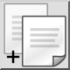
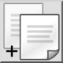
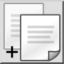
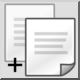

Kopiëren met referentiepunt
Werkbalk / icoon:
 

Menu: Bewerken > Kopiëren met referentiepunt
Sneltoetsen: Ctrl+Shift+C (Mac: ⇧⌘C) | R, C
Opdrachten: copywithreference | rc
Dit is een automatische vertaling.
Werkbalk / icoon:
 

Menu: Bewerken > Kopiëren met referentiepunt
Sneltoetsen: Ctrl+Shift+C (Mac: ⇧⌘C) | R, C
Opdrachten: copywithreference | rc
Kopieert de huidige selectie naar het QCAD klembord. Met dit functie kunt u een referentiepunt opgeven dat wordt gebruikt om de selectie te positioneren wanneer u deze in een tekening plakt.